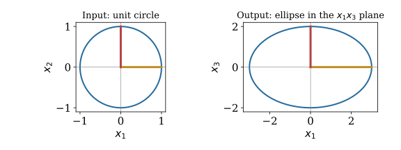
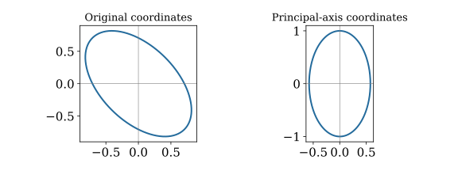

Special Topics
Anton, Rorres, & Kaul Selected Chs. 7–10
FFT and tensor enrichment
October 8, 2026
Choose coordinates that expose structure
\(\mat{A}=\mat{U}_r\mat{\Sigma}_r\mat{V}_r^{\mathsf T}\)
SVD and its regression connection are our priority
Rank your next two choices and give a question or application you want to explore
Selections depend on class interest and remaining time
\(\mat{A}:\reals^n\to\reals^m\) may stretch, turn, and collapse directions
Eigenvectors require a square matrix; singular vectors work for every shape
Choose orthonormal input and output directions adapted to the map
For a real \(m\times n\) matrix of rank \(r>0\): \[\begin{gather*} \mat{A}=\mat{U}_r\mat{\Sigma}_r\mat{V}_r^{\mathsf T},\qquad \mat{\Sigma}_r=\operatorname{diag}(\sigma_1,\ldots,\sigma_r)\\ \sigma_1\ge\cdots\ge\sigma_r>0,\qquad \mat{U}_r^{\mathsf T}\mat{U}_r=\mat{V}_r^{\mathsf T}\mat{V}_r=\mat{I}_r \end{gather*}\]
| Factor | Shape | Role |
|---|---|---|
| \(\mat{V}_r^{\mathsf T}\) | \(r\times n\) | input coordinates |
| \(\mat{\Sigma}_r\) | \(r\times r\) | stretch each coordinate |
| \(\mat{U}_r\) | \(m\times r\) | assemble the output |
Write \(\vct{U}_j\) and \(\vct{V}_j\) for columns of the compact factors \[\begin{gather*} \mat{A}\vct{V}_j=\sigma_j\vct{U}_j,\qquad \mat{A}^{\mathsf T}\vct{U}_j=\sigma_j\vct{V}_j\\ \mat{A}\vct{x}=\sum_{j=1}^r\sigma_j\vct{U}_j \bigl(\vct{V}_j^{\mathsf T}\vct{x}\bigr) \end{gather*}\]
Input perpendicular to every \(\vct{V}_j\) is sent to zero
Singular values measure stretches, not signed eigenvalues
\[\begin{gather*} \mat{A}=\begin{pmatrix}3&0\\0&0\\0&2\end{pmatrix},\quad \mat{U}_r=\begin{pmatrix}1&0\\0&0\\0&1\end{pmatrix},\quad \mat{\Sigma}_r=\begin{pmatrix}3&0\\0&2\end{pmatrix},\quad \mat{V}_r=\mat{I}_2\\ \mat{A}\begin{pmatrix}\cos t\\\sin t\end{pmatrix} =\begin{pmatrix}3\cos t\\0\\2\sin t\end{pmatrix} \end{gather*}\]
The unit circle becomes an ellipse in the \(x_1x_3\) plane
The ellipse axes are the left singular vectors; their lengths are the singular values

\(\mat{A}^{\mathsf T}\mat{A}\) is symmetric and positive semidefinite \[\begin{gather*} \vct{x}^{\mathsf T}\mat{A}^{\mathsf T}\mat{A}\vct{x} =\|\mat{A}\vct{x}\|^2\ge0\\ \mat{A}^{\mathsf T}\mat{A}\vct{V}_j=\sigma_j^2\vct{V}_j,\qquad \vct{U}_j=\frac{\mat{A}\vct{V}_j}{\sigma_j}\quad(\sigma_j>0) \end{gather*}\]
Orthogonal eigenvectors on the input side produce orthonormal output vectors
| Space | SVD description |
|---|---|
| \(\operatorname{col}(\mat{A})\) | span of \(\vct{U}_1,\ldots,\vct{U}_r\) |
| \(\operatorname{row}(\mat{A})\) | span of \(\vct{V}_1,\ldots,\vct{V}_r\) |
| \(\operatorname{null}(\mat{A})\) | perpendicular to all \(\vct{V}_j\) |
| \(\operatorname{null}(\mat{A}^{\mathsf T})\) | perpendicular to all \(\vct{U}_j\) |
Complete the columns of \(\mat{U}_r\) and \(\mat{V}_r\) to orthonormal bases to obtain bases of the two null spaces
\[\begin{equation*} \mat{A}=\sum_{j=1}^r\sigma_j\vct{U}_j\vct{V}_j^{\mathsf T} \end{equation*}\]
Each term reads one input coordinate and sends it along one output direction
Keep only the first \(k\) terms: \[\begin{equation*} \mat{A}_k=\sum_{j=1}^k\sigma_j\vct{U}_j\vct{V}_j^{\mathsf T},\qquad 0\le k<r \end{equation*}\]
A controlled approximation using fewer directions
Define \(\|\mat{B}\|_F^2=\sum_{i,j}|b_{ij}|^2\) and \(\|\mat{B}\|_2=\max_{\|\vct{x}\|=1}\|\mat{B}\vct{x}\|\) \[\begin{gather*} \|\mat{A}-\mat{A}_k\|_2=\sigma_{k+1}\\ \|\mat{A}-\mat{A}_k\|_F^2=\sum_{j=k+1}^r\sigma_j^2 \end{gather*}\]
\(\mat{A}_k\) minimizes either error over matrices of rank at most \(k\)
Choose the rank by the accuracy needed, not only by the appearance of the image
\(\exstar\) A matrix has singular values \(8,3,1\)
Find the rank-one spectral error and rank-two Frobenius error
How many rank-one terms reproduce the matrix exactly?
Fit observations \(b_i\) using features \(a_{ij}\) and coefficients \(x_j\) \[\begin{gather*} \widehat{\vct{b}}=\mat{A}\widehat{\vct{x}},\qquad \widehat{\vct{x}}\in\arg\min_{\vct{x}}\|\mat{A}\vct{x}-\vct{b}\|^2\\ \mat{A}^{\mathsf T}(\vct{b}-\widehat{\vct{b}})=\vct{0} \end{gather*}\]
\(\widehat{\vct{b}}\) is the orthogonal projection onto \(\operatorname{col}(\mat{A})\)
A column of ones supplies an intercept
For \(m\ge n\) and independent columns: \[\begin{gather*} \mat{A}=\mat{Q}\mat{R}_Q,\quad \mat{Q}^{\mathsf T}\mat{Q}=\mat{I}_n,\quad \mat{R}_Q\text{ upper triangular and invertible}\\ \|\mat{A}\vct{x}-\vct{b}\|^2 =\|\mat{R}_Q\vct{x}-\mat{Q}^{\mathsf T}\vct{b}\|^2 +\|(\mat{I}_m-\mat{Q}\mat{Q}^{\mathsf T})\vct{b}\|^2\\ \mat{R}_Q\widehat{\vct{x}}=\mat{Q}^{\mathsf T}\vct{b} \end{gather*}\]
Compute orthogonal coordinates, then use back substitution
\[\begin{gather*} \mat{A}^{\dagger}=\mat{V}_r\mat{\Sigma}_r^{-1}\mat{U}_r^{\mathsf T}\\ \widehat{\vct{x}}=\mat{A}^{\dagger}\vct{b} =\sum_{j=1}^r\frac{\vct{U}_j^{\mathsf T}\vct{b}}{\sigma_j}\vct{V}_j\\ \widehat{\vct{b}}=\mat{A}\widehat{\vct{x}} =\mat{U}_r\mat{U}_r^{\mathsf T}\vct{b} \end{gather*}\]
Works for rectangular and rank-deficient matrices
The pseudoinverse selects the least-squares solution with smallest Euclidean norm
Every least-squares minimizer has the form \[\begin{equation*} \vct{x}=\mat{A}^{\dagger}\vct{b}+\vct{z},\qquad \vct{z}\in\operatorname{null}(\mat{A}) \end{equation*}\]
\[\begin{gather*} \mat{A}=\begin{pmatrix}1&1\\1&1\end{pmatrix},\quad \vct{b}=\begin{pmatrix}2\\4\end{pmatrix},\quad \vct{U}_1=\vct{V}_1=\frac1{\sqrt2}\begin{pmatrix}1\\1\end{pmatrix},\quad\sigma_1=2\\ \widehat{\vct{x}}=\begin{pmatrix}3/2\\3/2\end{pmatrix},\quad \widehat{\vct{b}}=\begin{pmatrix}3\\3\end{pmatrix},\quad \vct{b}-\widehat{\vct{b}}=\begin{pmatrix}-1\\1\end{pmatrix} \end{gather*}\]
Both features are identical: only \(x_1+x_2=3\) is identifiable
The smallest-norm solution divides the total equally
A perturbation \(\delta\vct{b}\) changes the pseudoinverse coefficients by \[\begin{equation*} \delta\widehat{\vct{x}} =\sum_{j=1}^r\frac{\vct{U}_j^{\mathsf T}\delta\vct{b}}{\sigma_j}\vct{V}_j \end{equation*}\]
Small positive \(\sigma_j\): large coefficient changes in direction \(\vct{V}_j\)
For full column rank, \(\kappa_2(\mat{A})=\sigma_1/\sigma_n\)
An accurate fit can coexist with poorly determined coefficients
Truncated SVD retains only singular values above a chosen threshold \(\tau\): \[\begin{equation*} \widehat{\vct{x}}_\tau =\sum_{\sigma_j>\tau}\frac{\vct{U}_j^{\mathsf T}\vct{b}}{\sigma_j}\vct{V}_j \end{equation*}\]
Ridge minimizes \(\|\mat{A}\vct{x}-\vct{b}\|^2+\lambda\|\vct{x}\|^2\), \(\lambda>0\): \[\begin{equation*} \widehat{\vct{x}}_\lambda =\sum_{j=1}^r\frac{\sigma_j}{\sigma_j^2+\lambda} (\vct{U}_j^{\mathsf T}\vct{b})\vct{V}_j \end{equation*}\]
Truncation discards directions; ridge shrinks their contributions
| Question | Useful tool |
|---|---|
| Full-column-rank least-squares coefficients | QR and a triangular solve |
| Rank deficiency and minimum-norm coefficients | SVD and pseudoinverse |
| Sensitivity and numerical rank | Singular values and feature scaling |
| Noise-sensitive directions | Truncation or ridge |
Forming \(\mat{A}^{\mathsf T}\mat{A}\) squares \(\kappa_2(\mat{A})\) when \(\mat{A}\) has full column rank
Prefer an orthogonal factorization to explicitly inverting the normal-equation matrix
\(\exstar\) For the redundant-feature example, describe every least-squares solution
Verify that the residual is perpendicular to both columns
Explain why \((3/2,3/2)^{\mathsf T}\) has the smallest norm
For a real symmetric matrix: \[\begin{gather*} \mat{A}=\mat{Q}\mat{\Lambda}\mat{Q}^{\mathsf T},\qquad \mat{Q}^{\mathsf T}\mat{Q}=\mat{I}\\ \vct{x}=\mat{Q}\vct{y}\implies \vct{x}^{\mathsf T}\mat{A}\vct{x}=\sum_j\lambda_j y_j^2 \end{gather*}\]
The real symmetric spectral theorem: an orthonormal eigenbasis always exists
Principal-axis coordinates remove mixed terms
\[\begin{gather*} \mat{A}=\begin{pmatrix}2&1\\1&2\end{pmatrix},\quad \mat{Q}=\frac1{\sqrt2}\begin{pmatrix}1&1\\1&-1\end{pmatrix},\quad \mat{\Lambda}=\begin{pmatrix}3&0\\0&1\end{pmatrix}\\ 2x_1^2+2x_1x_2+2x_2^2=1 \quad\longleftrightarrow\quad 3y_1^2+y_2^2=1 \end{gather*}\]
Semiaxis lengths: \(1/\sqrt3\) and \(1\)
Eigenvectors give the axes; eigenvalues determine the curvature

For symmetric \(\mat{A}\):
| Eigenvalues | Quadratic form \(\vct{x}^{\mathsf T}\mat{A}\vct{x}\) |
|---|---|
| All positive | positive definite: positive for every \(\vct{x}\ne\vct{0}\) |
| All nonnegative | positive semidefinite: never negative |
| Positive and negative | indefinite: changes sign |
Least-squares curvature: \(\mat{A}^{\mathsf T}\mat{A}\)
Ridge curvature: \(\mat{A}^{\mathsf T}\mat{A}+\lambda\mat{I}\), positive definite for \(\lambda>0\)
\(\exstar\) Find orthonormal eigenvectors of \(\begin{pmatrix}2&-1\\-1&2\end{pmatrix}\)
Use them to rewrite \(2x_1^2-2x_1x_2+2x_2^2\)
Is this form positive definite?
A signal sampled at \(n\) equally spaced points becomes \(\vct{x}\in\mathbb{C}^n\)
Index samples and frequencies by \(0,\ldots,n-1\) \[\begin{gather*} \omega_n=e^{-2\pi\sqrt{-1}/n},\qquad (\mat{F}_n)_{kj}=\omega_n^{kj}\\ \vct{X}=\mat{F}_n\vct{x},\qquad \vct{x}=\frac1n\mat{F}_n^*\vct{X} \end{gather*}\]
\(\mat{B}^*=\overline{\mat{B}}^{\mathsf T}\) denotes the conjugate transpose
Frequency coordinates reveal oscillations hidden in the sample values
Use \(\langle\vct{u},\vct{v}\rangle=\vct{u}^*\vct{v}\) \[\begin{equation*} \sum_{j=0}^{n-1}\omega_n^{(k-\ell)j} =\begin{cases}n,&k=\ell\\0,&k\ne\ell\end{cases} \end{equation*}\]
Thus \(\mat{F}_n^*\mat{F}_n=n\mat{I}_n\) and \(\mat{F}_n/\sqrt n\) is unitary
The DFT is a scaled change to an orthonormal basis
\[\begin{gather*} \mat{F}_4=\begin{pmatrix} 1&1&1&1\\1&-\sqrt{-1}&-1&\sqrt{-1}\\ 1&-1&1&-1\\1&\sqrt{-1}&-1&-\sqrt{-1} \end{pmatrix}\\ \vct{x}=\begin{pmatrix}1\\0\\-1\\0\end{pmatrix} \implies\vct{X}=\begin{pmatrix}0\\2\\0\\2\end{pmatrix} \end{gather*}\]
A real cosine uses a pair of opposite frequency directions
For even \(n\), split \(x_0,x_2,\ldots\) from \(x_1,x_3,\ldots\)
Let \(E_k\) and \(O_k\) be their length-\(n/2\) DFTs \[\begin{align*} X_k&=E_k+\omega_n^k O_k\\ X_{k+n/2}&=E_k-\omega_n^k O_k,\qquad 0\le k<n/2 \end{align*}\]
For \(n=2^p\), repeat the split down to one-sample transforms \[\begin{equation*} T(n)=2T(n/2)+O(n)=O(n\log n) \end{equation*}\]
The FFT computes the same DFT through a sparse recursive factorization
Circular convolution of length-\(n\) vectors: \[\begin{gather*} y_j=\sum_{\ell=0}^{n-1}h_\ell x_{(j-\ell)\bmod n}\\ \mat{F}_n\vct{y}=(\mat{F}_n\vct{h})\odot(\mat{F}_n\vct{x}) \end{gather*}\]
\(\odot\): multiply matching coordinates
A circulant filter is diagonal in Fourier coordinates
Zero-pad to at least \(n_x+n_h-1\) samples to compute ordinary finite linear convolution
\(\exstar\) Compute the DFT of \((1,1,1,1)^{\mathsf T}\) and \((1,-1,1,-1)^{\mathsf T}\)
Which is constant and which alternates?
Why does the FFT leave these answers unchanged?
\[\begin{gather*} \vct{u}=\begin{pmatrix}1\\2\end{pmatrix},\quad \vct{v}=\begin{pmatrix}3\\4\\5\end{pmatrix},\qquad \vct{u}\vct{v}^{\mathsf T}=\begin{pmatrix}3&4&5\\6&8&10\end{pmatrix}\\ a_{ij}=u_i v_j \end{gather*}\]
One pattern down the rows, one across the columns
A nonzero outer product has rank one
SVD builds matrices by summing such separated patterns
For finite-dimensional real spaces \(V\) and \(W\) with bases \((\vct{e}_i)\) and \((\vct{f}_j)\): \[\begin{gather*} V\otimes W\text{ has basis }(\vct{e}_i\otimes\vct{f}_j)_{i,j}\\ T=\sum_{i,j}t_{ij}\vct{e}_i\otimes\vct{f}_j,\qquad \dim(V\otimes W)=\dim(V)\dim(W) \end{gather*}\]
\(\otimes\) is bilinear; a general tensor is a sum of elementary tensors
The elementary tensor \(\vct{u}\otimes\vct{v}\) has coordinate matrix \(\vct{u}\vct{v}^{\mathsf T}\)
The coordinate array represents the tensor relative to chosen bases
For matrices \(\mat{B}\) and \(\mat{C}\): \[\begin{gather*} \mat{B}\otimes\mat{C}=[b_{ij}\mat{C}]_{i,j}\\ (\mat{B}\otimes\mat{C})(\vct{u}\otimes\vct{v}) =(\mat{B}\vct{u})\otimes(\mat{C}\vct{v}) \end{gather*}\]
If \(\mat{B}\) is \(p\times m\) and \(\mat{C}\) is \(q\times n\), their Kronecker product is \(pq\times mn\)
Here the coordinate vector for \(\vct{u}\otimes\vct{v}\) lists one block \(u_i\vct{v}\) per \(i\)
For an \(m\times n\) image matrix \(\mat{X}\): \[\begin{gather*} \mat{Y}=\mat{B}\mat{X}\mat{C}^{\mathsf T}\\ \operatorname{vec}(\mat{Y})=(\mat{C}\otimes\mat{B})\operatorname{vec}(\mat{X}) \end{gather*}\]
\(\operatorname{vec}\) stacks columns; \(\mat{B}\) acts on row indices and \(\mat{C}\) on column indices
Two-dimensional DFT: \(\mat{Y}=\mat{F}_m\mat{X}\mat{F}_n^{\mathsf T}\)
Apply the smaller transforms separately instead of building a giant Kronecker matrix
An image with color channels has coordinates \(t_{ijk}\)
An elementary three-factor tensor has \(t_{ijk}=u_i v_j w_k\) \[\begin{equation*} \mathcal{T}=\sum_{\ell=1}^s\vct{u}_\ell\otimes\vct{v}_\ell\otimes\vct{w}_\ell \end{equation*}\]
A contraction sums matching indices, for example \[\begin{equation*} y_i=\sum_{j,k}t_{ijk}v_j w_k \end{equation*}\]
\(\exstar\) Which matrix is a single outer product?
\(\mat{X}=\begin{pmatrix}1&2\\3&6\end{pmatrix}\), \(\quad\mat{Y}=\begin{pmatrix}1&2\\3&7\end{pmatrix}\)
For \(\dim(V)=2\) and \(\dim(W)=3\), how many product-basis vectors are needed?
Choose a nonzero \(\vct{x}_0\) and repeat \[\begin{equation*} \vct{x}_{k+1}=\frac{\mat{A}\vct{x}_k}{\|\mat{A}\vct{x}_k\|} \end{equation*}\]
For a real diagonalizable matrix with \(|\lambda_1|>|\lambda_2|\) and a nonzero dominant component:
Let \(\mat{P}\) be column stochastic, with dangling columns replaced by probability vectors \[\begin{gather*} \mat{G}=\alpha\mat{P}+(1-\alpha)\vct{v}\vct{1}^{\mathsf T},\qquad 0<\alpha<1,\quad v_i>0,\quad\vct{1}^{\mathsf T}\vct{v}=1\\ \vct{p}_{k+1}=\mat{G}\vct{p}_k,\qquad \mat{G}\vct{p}=\vct{p},\quad\vct{1}^{\mathsf T}\vct{p}=1 \end{gather*}\]
Follow a link with probability \(\alpha\); restart with probability \(1-\alpha\)
Positivity gives a unique stationary distribution and convergence from any probability vector
For an undirected graph, choose an orientation and let \(\mat{D}\) have one row per edge
An edge \(i\to j\) has \(-1\) in column \(i\) and \(+1\) in column \(j\) \[\begin{gather*} \mat{L}=\mat{D}^{\mathsf T}\mat{D},\qquad \vct{x}^{\mathsf T}\mat{L}\vct{x} =\sum_{\{i,j\}\text{ edge}}(x_i-x_j)^2 \end{gather*}\]
\(\exstar\) A graph has edges \(\{1,2\}\) and \(\{2,3\}\) and isolated vertex \(4\)
Build its incidence matrix and Laplacian
Find a basis for the Laplacian null space
SVD and regression are core; extensions can follow the class’s interests
Choose bases and factorizations to reveal attainable outputs, lost directions, and useful structure
Choose an application and identify:
Selected Anton Chapters 7–10: quadratic forms, transformations, SVD, compression, iterative methods, and networks
Supplementary Fourier and tensor material: Strang’s Lecture Notes for Linear Algebra, Parts 7, 9, and 10
© 2026 Fred J. Hickernell · Illinois Tech · assisted by ChatGPT and Codex · Special Topics · MATH 332 — Fall 2026 Website · \(\exstar\) = exercise